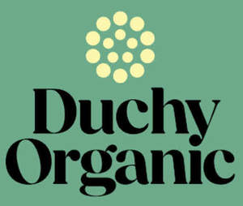

Trade Mark Journal No.2025/013 28 March 2025
UK00004153979 29 January 2025 (29,30,31,32,33)

- Class 29
- Meat, fish, poultry and game; fish, seafood and molluscs, not live; meat extracts; preserved, frozen, dried and cooked fruits and vegetables, fungi, nuts and pulses; prepared salads; jellies, jams, compotes; eggs; milk, cheese, butter, yogurt and other milk products; oils and fats for food; dairy substitutes; milk substitutes; plant-based milk substitutes; alginates for culinary purposes; soups and stocks, meat extracts, prepared and ready meals predominately made from meat, fish, seafood or vegetables; prepared nuts and seeds; tofu; meat substitutes; vegetable-based meat substitutes; prepared meals consisting primarily of meat substitutes; prepared meals consisting primarily of seafood substitutes; prepared meals consisting primarily of vegetables; vegetable soup preparations; vegetable juices for cooking; ground almonds, broth and broth concentrates; cocoa butter; coconut butter; desiccated coconut; compotes; potato snacks; fruit snacks; meat snacks; desserts made from milk products; fruit desserts; dairy desserts; all the aforesaid goods produced organically.
- Class 30
- Coffee, tea, cocoa and artificial coffee; rice; tapioca and sago; flour and preparations made from cereals; bread, pastries and confectionery; edible ices; sugar; natural sweeteners; yeast, baking-powder; salt; mustard; vinegar; sauces (condiments); cooking sauces; condiments; spices; agave syrup [natural sweeteners]; chocolate spreads containing nuts; chocolate-based beverages; chocolate-based spreads; chocolate-coated nuts; cocoa; cocoa-based beverages; coffee flavourings; coffee; crackers; dressings for salad; essences for foodstuffs, except etheric essences and essential oils; ferments for pastes; flowers or leaves for use as tea substitutes; food flavourings, other than essential oils; prepared meals consisting primarily of rice; prepared meals consisting primarily of pasta; pies [sweet or savoury], glucose for culinary purposes; gluten prepared as foodstuff; gluten additives for culinary purposes; high-protein cereal bars; prepared meals consisting primarily of porridge, cereals or grits; breakfast cereals containing a mixture of fruit and fibre; ice cream; malt extract for food; malt for human consumption; maltose; marinades; mayonnaise; meal / flour; mustard meal; natural sweeteners; noodle-based prepared meals; noodles; nut flours; oat-based food; oatmeal; edible paper; pasta; pasta sauce; pies; pizzas; popcorn; potato flour; powders for making ice cream; pralines; propolis; puddings; quiches; rice-based snack food; rusks; salt for preserving foodstuffs; sandwiches; seasonings; seaweed [condiment]; processed seeds for use as a seasoning; couscous; semolina; sesame seeds [seasonings]; starch for food; tea; tea-based beverages; thickening agents for cooking foodstuffs; vegetal preparations for use as coffee substitutes; all the aforesaid goods produced organically.
- Class 31
- Raw and unprocessed grains and seeds; fresh fruits and vegetables, fresh herbs; fresh pulses; fresh nuts; raw nuts; unprocessed nuts; unprocessed grains for eating; unprocessed beans; natural plants and flowers; bulbs, seedlings and seeds for planting; fresh garlic; fresh olives; unprocessed rice; bran; coconut shell; dried plants for decoration; oil cake; raw cocoa beans; seedlings; sesame; sugarcane; fresh truffles; all the aforesaid goods produced organically.
- Class 32
- Beers; aerated drinks [non-alcoholic]; aerated juices; non-alcoholic beverages; carbonated non-alcoholic drinks; energy drinks [not for medical purposes]; fruit based drinks; fruit drinks; fresh fruit and vegetable juices; smoothies made from fruit, vegetables, dairy alternatives, nuts, grains and / or oats; isotonic drinks [not for medical purposes]; soft drinks; syrups and other non-alcoholic preparations for making beverages; all the aforesaid goods produced organically.
- Class 33
- Alcoholic beverages [except beers], preparations for making alcoholic beverages, spirits and liquors, cider, wine, pre-mixed alcoholic beverages, alcoholic beverages containing fruit, alcoholic essences, alcoholic extracts, aperitifs, bitters, brandy, calvados, cream liqueurs, cider, cocktails, distilled beverages, fruit extracts(alcoholic), gin, grappa, kirsch, liqueurs, peppermint liqueurs, perry, pre-mixed alcoholic beverages (other than beer-based), rum, sake, spirits [beverages], tequila, vodka, whisky, wine, alcoholic energy drinks, alcoholic punches, blended whisky, bourbon whiskey, liqueurs containing cream, malt whisky, mulled wines, port, port wines, rum punch, sangria, schnapps, sherry, sparkling wines, tequila, vermouth; all the aforesaid goods produced organically.
Waitrose Limited
Representative: Lewis Silkin LLP